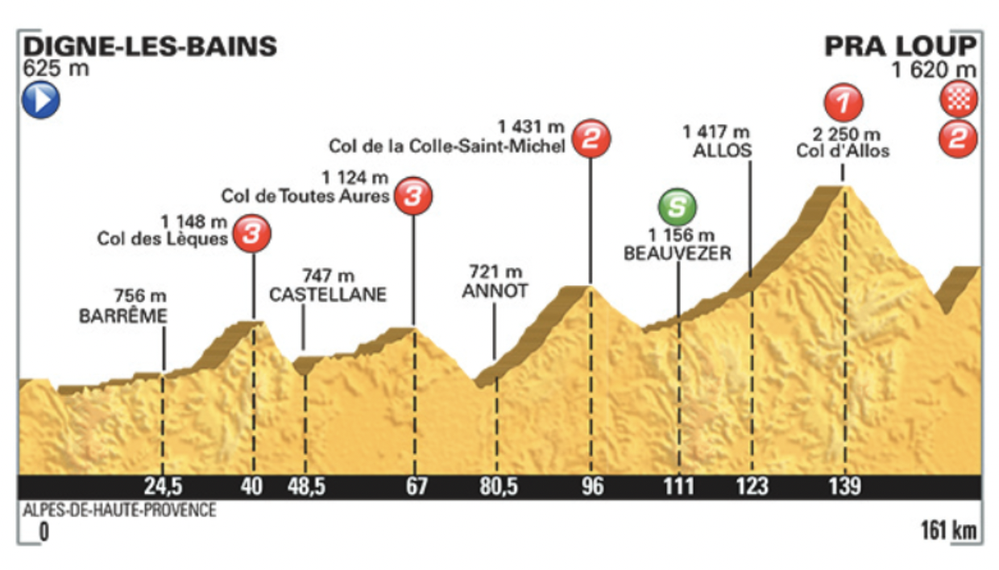
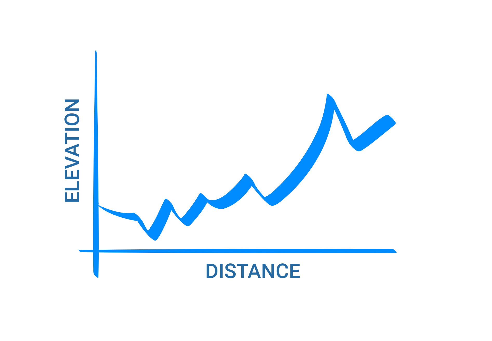
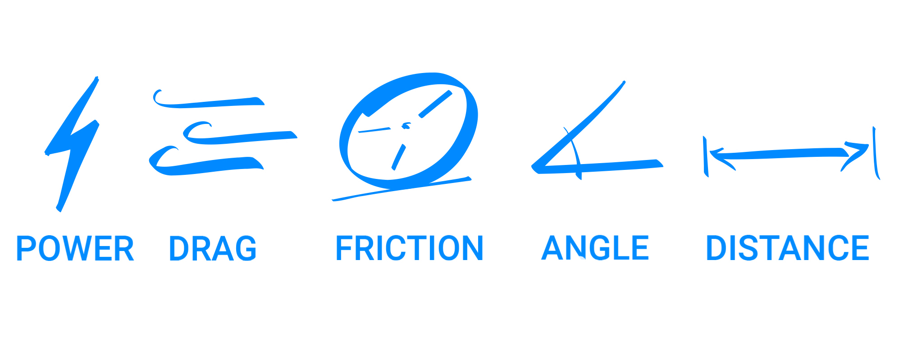
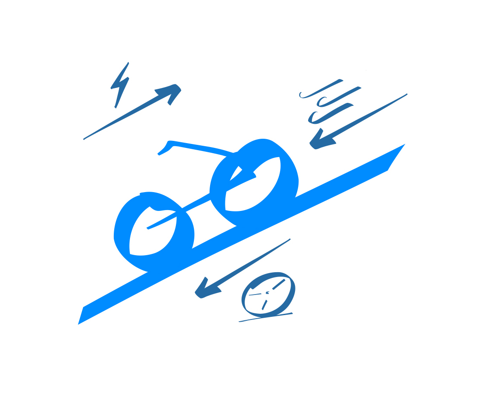
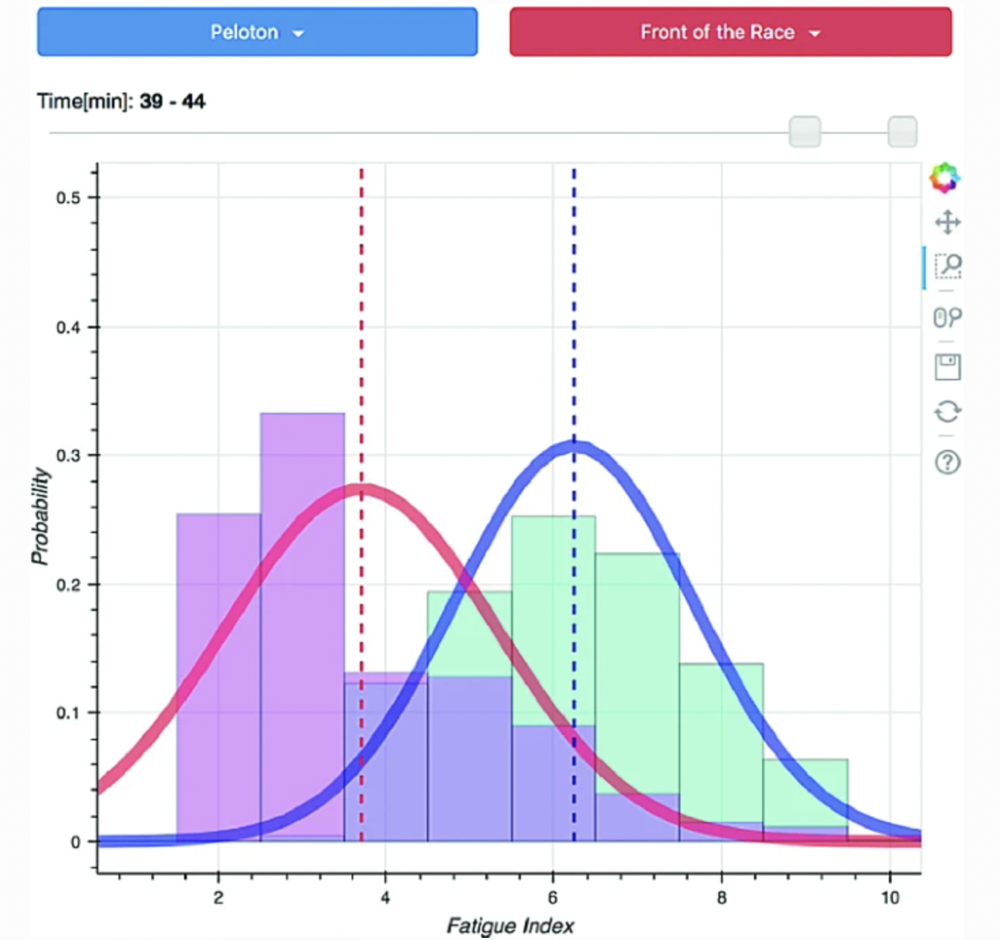
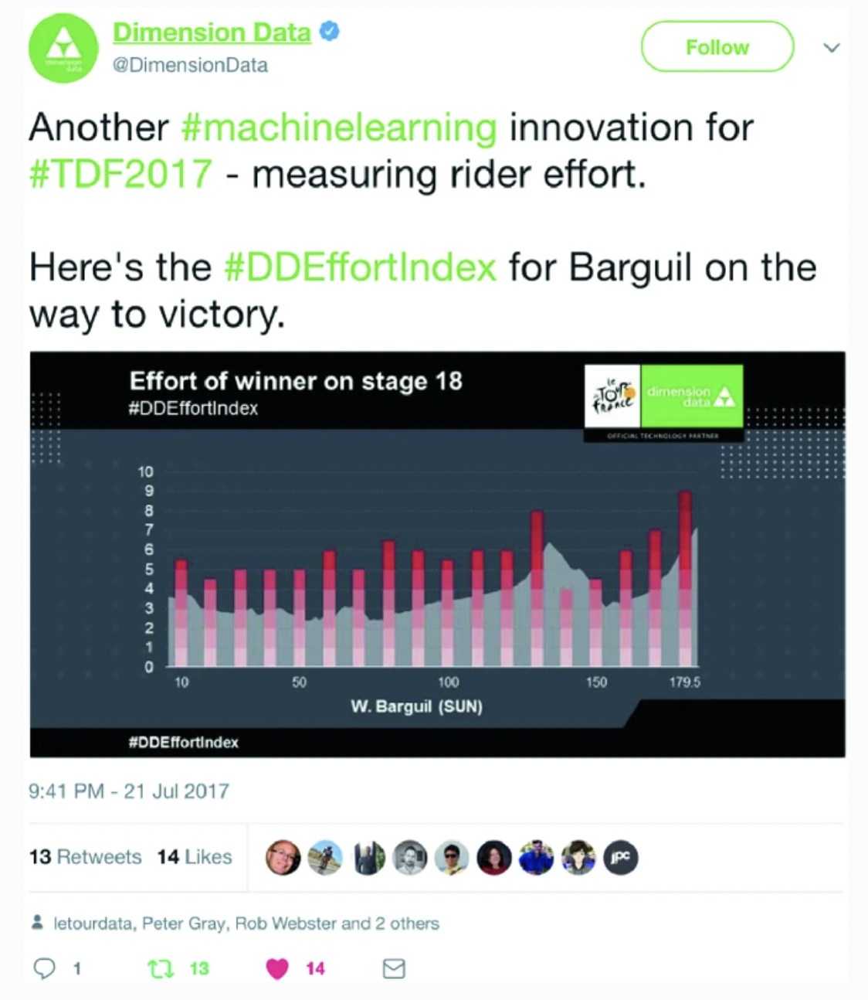

Artificial intelligence is a domain of computer science that's gaining a lot of traction these days. Some people love it and are excited for it to make our lives better and there are many people who fear it. Few people understand it. In this post, I would like to make machine learning more approachable and explain how it can be used for entertainment, on the example of the 2015 and 2017 Tour de France events. I will briefly describe which elements of the race were used to make predictions and which ones were discarded, and why. Finally I will talk about how we can we can use them to build a model and what awesome things we can use the results for!
I will briefly describe which elements of the race were used to make predictions and which ones were discarded, and why. Finally I will talk about how we can we can use them to build a model and what awesome things we can use the results for!
In this post I will focus on two studies:
- Tour de France Modeling: 2015 Results and Comparisons with Elite Cyclist Power Data, part of a series of studies conducted from 2003 to 2016 that aimed to predict the winner of each stage of the tour [1-3]
- Real-Time Power Performance Prediction in Tour de France, whose authors developed a real-time machine learning model used in the Tour de France 2017, whose results were shared with fans to boost engagement [4]
What are features?
Before we start working on a model, we need to figure out what we can use to predict who will win. A feature [5] is a measurable property of the object you’re trying to analyze or in other words a bit of information the model makes decisions based on. Here are a few examples of what the features might look like for different problems:
| Problem | Example |
|---|---|
| Risk of developing Alzheimer’s |
- Number of relatives who had Alzheimer's - Age of patient - Number of past head injuries [6] |
| Chance of surviving the sinking of the Titanic | - Age - Gender - Class [7] |
How do we find features?
How do we come up with these features? We need to find which elements of the problem would make the most difference in the final prediction. This process is called feature engineering [8] and can involve a few different techniques. We can use our own domain knowledge to come up with them (common sense), or we can consult colleagues or experts [9].
We can also use advanced machine learning techniques to let the algorithm find features for us [10], in this case though, we won’t know what the features are exactly, rather, the algorithm will store them as cryptic numbers that are impossible to decipher. Fortunately for the purposes of this article, this cryptic math does not concern us.
The 2015 Tour de France winner predictions
What can we use to predict who will win?
In the 2015 Tour de France Modeling study, the researchers aimed to predict the winner of each stage by calculating the time it will take the biker to reach the finish line. They used power, drag (air resistance), and friction combined with the characteristics of the terrain such as the angle in degrees, and the length of the stage.
The researchers decided to discard non-physical or unpredictable elements of the race such as weather, team strategies, crashes, and sharp turns. In addition to being unpredictable, these elements are hard to turn into pure numbers to use for calculations.
Collecting data
The process of collecting data is essential for creating artificial intelligence models. Without data we’d have nothing to work with. What did the process look like for the 2015 study?
The researchers didn’t need to go to France or use Google Maps to measure the exact distances, curves and angles of the roads the bikers took to create a model of the three-dimensional world. They used an approximated two-dimensional model of the stages. The Tour de France releases snapshots of the routes along with elevation levels like in the example below.
However, these snapshots contain too little information to make an accurate model. The researchers had to use GPS data in order to create a more accurate view of each stage. This neat approximation was all that the model needed to create pretty accurate results. An example of a single stage looked something like this.
There was one more data collection step, but this time the data was collected for evaluation of the model, not in order to build it or improve it. During the tour, many cyclists used power meters and shared those data with the researchers. This data was later used to verify the results of the model’s muscle power calculations.
How the model works
To represent a biker the researchers created a simple model with three main characteristics:
- Mass of biker: used to calculate the force of gravity and muscle power
- Aerodynamic drag (aka air resistance)
- Rolling friction: the friction of the wheels rolling on the ground
Of course, there are other forces that work on the bike, such as the mysterious normal force [11], however, we’re trying to develop an intuitive view of the model, so I have decided to skip distracting physical and mathematical nuances, in favour of a more simplified view.
Features: power, drag, rolling friction, angle of the stage and length of the stage
The biker’s muscle power is trying to push the bike forward, but air resistance and rolling friction are trying to slow it down. Other features that were used in the calculation were the length of the stage and the steepness of the stage.
The simplified model of the biker, with the power, drag and friction working on it
Here’s an interesting nuance the scientists included in the study. In the model’s calculations, they used a constant value to represent the front surface area of the biker’s body. The purpose of this was to help them calculate the amount of air resistance working on that surface. The constant was different when the contestant was going uphill or downhill. This small change in a biker’s position when biking uphill or downhill turned out to be very important and had to be accounted for in calculations.
How was the biker’s power calculated? The researchers used a general rule of thumb [12] commonly used in biology that states that
an animal’s (in this case a human’s) power correlates with its mass
All you need to do is raise the mass to the power of ⅔:
Power = mass ^ 2/3
For example, during the tour, Thibaut Pinot had a mass of 63 kg and Simon Geschke had a mass of 64 kg. The 1 kg increase in mass correlates to approximately a 4 Watt increase in power. Many factors can contribute to the biker’s power output, however, this approximation seemed to work out very well for the researchers.
Finally, after gathering all the variables and applying all the constants, a final equation was applied in order to determine how long it rider to complete the stage.
During the Tour, the researchers observed the bikers in real time and adapted to different conditions by changing the Power value in the calculation based on previous stages, in order to account for things like fatigue and distance of the stage. For example, for longer stages, the power had to be decreased, and for shorter stages, increased. These changes had to be factored in before the start of each stage.
Results
The final results consisted of finishing times as well as power outputs for each stage. The model improved a lot since 2003 and the 2015 model had some of the best results.
Overall the difference (aka error) between the finishing times calculated by the model and actual finishing times was between 0.77% and 11%. Results for stages that were not impacted by serious crashes, rainfall, or headwinds were more accurate. The power output error was between 0.05% and 10.5%.
Obstacles
The researchers encountered a few obstacles along the way. The elevation data obtained from the Tour de France website was insufficient to create an accurate model of the stages. The researchers had to find online resources that will help them map the changing elevations of the stages and manually craft them from other GPS sources [13].
Another difficulty was the unpredictability of events, for example, crashes, weather and unexpected record breaking. Since these events are unexpected but are however bound to happen at some point in the tour, the researchers decided not to consider them and instead when evaluating the model, turn more focus on the stages with fewer unpredictable events.
The accessibility of technology was another hurdle. Not all bikers wore power meters and the researchers simply did not have power data from the competitors to evaluate the model with more accuracy.
The 2015 Tour de France winner predictions
The Real-Time Power Performance Prediction in Tour de France was another attempt at predicting power during the tour. This study makes use of wind sensor and power sensor data to create a real-time predictive model.
Some features in this model were hand-crafted by the authors (friction, wind resistance, energy), while others were automatically generated using a deep learning algorithm [14]. The model uses machine learning, which is a subset of artificial intelligence when the model learns to predict the future based on past data [15].
The algorithm was used to create visualisations during the 2017 edition of the Tour de France, that were shared with fans online, in order to boost engagement.
Data
The researchers used the following sources of data:
- GPS data
- Wind sensor data to aid in air resistance calculations
- Power sensor data, to measure how much force is being pushed through the pedals by the rider
Features
The model used both hand-crafted and features created by a machine learning algorithm. The researchers were looking to calculate the power of the biker. The features that the researchers handcrafted were friction, wind resistance (air resistance + wind data), and the biker’s energy.
As I mentioned in the What are features? section, we can apply machine learning to auto-create features. In short, during this process, the algorithm looks at past events to see which factors were the best predictors of the outcome. The auto-generated features were created from the following GPS data:
- distance to finish,
- position in the race,
- time gaps,
- clustering of individual riders into groups,
- environmental data (current gradient of the road, wind conditions etc.)
Finally, the model trains on those features and learns how to make real-time predictions.
Visualisations
The researchers used the final model’s predictions to create visualisations, which were then shared with the spectators on the internet.
One example of a visualisation (pictured below) allowed the viewers to compare the performance of different groups in the past 5 minutes. The fatigue index tool could, for example, show how a group is trying to save energy or catch up with another group.
Another example of a graph shows how a biker saved energy going downhill and used that saved energy at the end of the race in order to win it.

Key takeaways
- Features are little snippets of information that describe the problem
- Scientists can hand pick features or use algorithms to generate them
- We don’t need extremely accurate measurements of physical characteristics such as weight and distance, we can approximate
- Scientists use AI predictions to create graphs to boost engagement and entertainment
Glossary
| Term | Definition |
|---|---|
| Constant | A value that does not change during a stage. For example, the weight of a biker. |
| Drag | Also known as air resistance, is the force of air pushing at the moving biker from the front |
| Features | A measurable property of the object, that can be used to deduce information about it. For example, features of weather are: temperature, humidity, whether its raining or not, chance of rain |
| Feature engineering | The process of choosing features, either by hand-crafting them or using a machine learning algorithm to create them. |
| Normal force | The force that a surface exerts on an object. Remember Newton’s law that states that “for every action (force) in nature there is an equal and opposite reaction.”. Imagine you're standing on a table. Your body exerts a downward force on the table, and the table also exerts an upward force on your feet. If it didn't, you’d fall right through the table. If you stand for long enough and your feet start to hurt, you can blame the normal force. |
| Rolling friction | The friction of wheels rolling on the ground. |
| Variable | A value that changes during a stage. For example, the angle of the road. |
References
[1] C. Hobson and J. Goff, "Tour de France Modeling: 2015 Results and Comparisons with Elite Cyclist Power Data", Procedia Engineering, vol. 147, pp. 607-612, 2016. Available: 10.1016/j.proeng.2016.06.250.
[2] B. Ramsey and J. Goff, "Predicting Tour de France stage-winning times with continuous power and drag area models and high speeds in 2013", Proceedings of the Institution of Mechanical Engineers, Part P: Journal of Sports Engineering and Technology, vol. 228, no. 2, pp. 125-135, 2014. Available: 10.1177/1754337113515207.
[3] B. Hannas and J. Goff, "Model of the 2003 Tour de France", American Journal of Physics, vol. 72, no. 5, pp. 575-579, 2004. Available: 10.1119/1.1632491.
[4] Y. Kataoka and P. Gray, "Real-Time Power Performance Prediction in Tour de France", Machine Learning and Data Mining for Sports Analytics, pp. 121-130, 2019. Available: 10.1007/978-3-030-17274-9_10 [Accessed 3 August 2022].
[5] A. Kumar, "What are Features in Machine Learning? - Data Analytics", Data Analytics, 2022. [Online]. Available: https://vitalflux.com/what-are-features-in-machine-learning/. [Accessed: 03- Aug- 2022].
[6] D. Knopman et al., "Alzheimer disease", Nature Reviews Disease Primers, vol. 7, no. 1, 2021. Available: 10.1038/s41572-021-00269-y [Accessed 3 August 2022].
[7] "Titanic Survivors", Encyclopedia Titanica, 2022. [Online]. Available: https://www.encyclopedia-titanica.org/titanic-survivors/. [Accessed: 03- Aug- 2022].
[8] "What is Feature Engineering — Importance, Tools and Techniques for Machine Learning", Medium, 2022. [Online]. Available: https://towardsdatascience.com/what-is-feature-engineering-importance-tools-and-techniques-for-machine-learning-2080b0269f10#:~:text=Feature%20engineering%20is%20a%20machine, while%20also%20enhancing%20model%20accuracy. [Accessed: 03- Aug- 2022].
[9] "Feature Selection — Exhaustive vs. Cherry-Picked", Medium, 2022. [Online]. Available: https://towardsdatascience.com/feature-selection-exhaustive-vs-cherry-picked-7125c50e7ccf. [Accessed: 03- Aug- 2022].
[10] "Feature Engineering Techniques to follow in Machine Learning", Analytics Vidhya, 2022. [Online]. Available: https://www.analyticsvidhya.com/blog/2021/07/feature-engineering-techniques-to-follow-in-machine-learning/. [Accessed: 03- Aug- 2022].
[11] "What is normal force? (article) | Khan Academy", Khan Academy, 2022. [Online]. Available: https://www.khanacademy.org/science/physics/forces-newtons-laws/normal-contact-force/a/what-is-normal-force. [Accessed: 03- Aug- 2022].
[12] T. McMahon, On size and life, 1st ed. New York: Scientific American Books/W. H. Freeman and Company, 1983.
[13] "Google Maps Find Altitude", Daft Logic, 2022. [Online]. Available: http://www.daftlogic.com/sandbox-google-maps-find-altitude.htm. [Accessed: 03- Aug- 2022].
[14] P. Vincent, H. Larochelle, Y. Bengio and P. Manzagol, "Extracting and composing robust features with denoising autoencoders", Proceedings of the 25th international conference on Machine learning - ICML '08, 2008. Available: 10.1145/1390156.1390294 [Accessed 3 August 2022].
[15] "The Difference Between Artificial Intelligence and Machine Learning", Analyticsinsight.net, 2022. [Online]. Available: https://www.analyticsinsight.net/the-difference-between-artificial-intelligence-and-machine-learning/#:~:text=Artificial%20intelligence%20is%20a%20technology, humans%20to%20solve%20complex%20problems. [Accessed: 03- Aug- 2022].